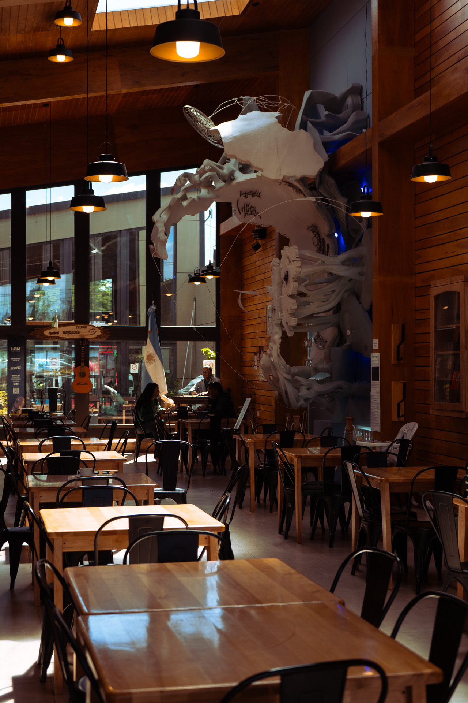
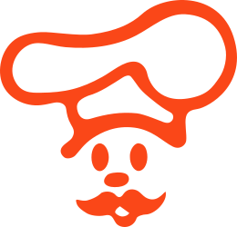

La firma
Usá el vector original. Las modificaciones de la U y la N forman parte de su dibujo; el nombre no se recompone con tipografía.
Tolhuin, Tierra del Fuego · 2026
Oficio, productos y personas.
Una guía para expresarlos con continuidad.


Eternamente
agradecidos.
Nuestra identidad
Desde 1985, La Unión construye su historia en Tolhuin. El panadero conserva ese vínculo; su redibujo acompaña nuevas aplicaciones.
La marca conecta el oficio con el encuentro: lo que elaboramos, el lugar que habitamos y las personas que vuelven.
Identidad inicial: KRUND. Continuidad, modernización y desarrollo del sistema gráfico: Valentín Guillán, diseñador de La Unión.
Usá el vector original. Las modificaciones de la U y la N forman parte de su dibujo; el nombre no se recompone con tipografía.
Memoria, oficio y reconocimiento. Acompañalo con la firma cuando el contexto necesite identificar a La Unión.
La firma necesita aire. Reservá a su alrededor el módulo x, tomado de la altura del monograma U/N, y comprobá la lectura al tamaño final.
Como criterio operativo de esta edición, la firma completa parte de 35 mm en impresión o 220 px en pantalla. Sin descriptor: 25 mm o 140 px. Monograma: 8 mm o 32 px.
Estos mínimos son propuestas de composición. Verificá siempre el resultado sobre el soporte final y conservá la misma unidad de reserva en los cuatro lados.
Sistema de color
Rojo, beige y blanco protagonizan la marca.
El azul acompaña de manera puntual.
Rojo
Beige
Blanco
Azul · Apoyo puntual
La representación en pantalla es orientativa. Elegí la guía y la prueba adecuadas al soporte; las conversiones digitales o CMYK se acuerdan para cada producción.
Las combinaciones habituales
Los pares principales sostienen la presencia del rojo. Beige y blanco alternan superficies, sin competir por la lectura.
Azul como apoyo. Reservalo para datos, cotas y detalles puntuales. Beige y blanco pueden alternar superficies; evitá combinarlos para textos o firmas sin contraste.
Tipografía

Una voz clara.
Distintas intensidades.
Títulos y mensajes principales.
Apoyos y slogan.
Texto editorial y lectura continua.
El logotipo conserva su dibujo basado en Eastman Alternate Bold, con U/N modificadas. Su descriptor utiliza Futura PT Book. Open Sans está documentada como apoyo digital.
Jerarquía y ritmo
Algo rico para compartir.
Recursos gráficos
El patrón conecta formas del oficio y del lugar.
Conservá el dibujo de los módulos. Elegí la escala y el recorte según el soporte, y alterná el patrón con superficies tranquilas: marca, producto e información necesitan respirar.
Las familias de producto tienen combinaciones propias. Frente, dorso y elementos asociados mantienen continuidad; una variante de sabor no reemplaza la paleta institucional.
Pequeños gestos
de marca.
Usá composiciones completas. Conservá los espacios internos y probá su lectura sobre el material elegido.
Fotografía de producto
Producto real. Textura visible.
Luz cuidada. Un protagonista.
Fotografía de experiencia
El obrador, el salón y quienes nos visitan cuentan cómo se vive La Unión. Buscá gestos naturales, manos trabajando y productos que pasan de una persona a otra.
Alterná producto y vida del local. La preparación debe reconocerse y representar fielmente lo que se ofrece.
Voz y comunicación
Vení. Pasá.
Elegí algo rico.
Una mesa para compartir
un buen momento.
Gracias
por ser parte.
Hablamos con voseo, palabras simples e información concreta. Una idea principal por publicación.
El título invita. La fotografía cuenta. Los detalles orientan. La firma cierra la composición.
Aplicaciones de la familia
Firma, patrón y color se encuentran en piezas que acompañan al producto todos los días.
La etiqueta, el dorso y el precinto forman un conjunto. Marca, clase de producto y variedad mantienen un orden reconocible.
Una imagen y una idea principal. Alterná producto y experiencia; cuidá los recortes y dejá aire entre título, foto y firma.
Conservan sus sistemas originales y cumplen una función específica. La identidad estable mantiene la relación entre todas las aplicaciones.
Los ejemplos documentan aplicaciones originales y sus colores de producción. No reemplazan el arte final de cada producto.
Producción y recursos
32 páginas de identidad, lenguaje y aplicaciones.